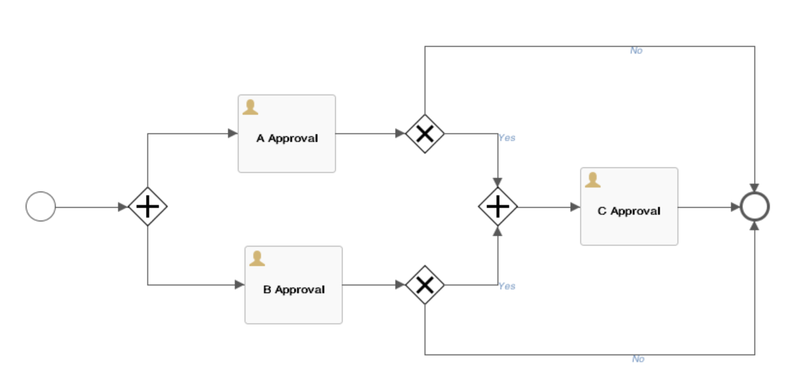
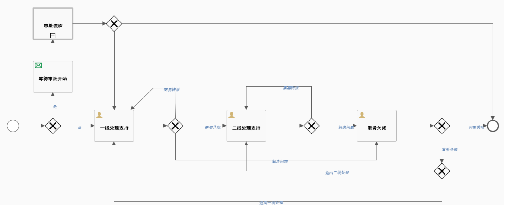
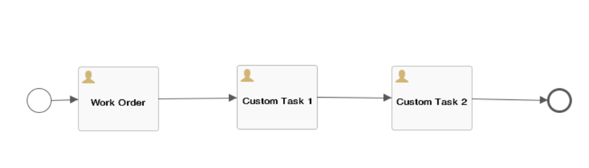

Workflow application scenario
In the process of self-service request, approval, automated deployment, operations, and manual work order of cloud resources, the workflow defines the methods and strategies of these task processing or service configuration processes.
The system provides standard workflows by default and supports administrators to define the processes required for flexible services through the workflow designer, control cloud application, operations, and recycle, and manage and close manual work order services.
There are three main types of workflows for the platform: approval, manual work order service, and cloud resource blueprint service process.
1. Approval Workflow Management
Support tenant administrators to customize the approval workflow template through the workflow designer. The specific configuration of the customization includes the approval hierarchy, the approval of the approver, the approval rules, and the operations that can be performed.
Main function point:
Support for defining any multi-level approvals.
Support the entire workflow of graphical design approval in Workflow Designer.
Support for defining approval by user or role.
Support for defining the configuration of the request when defining an approval.
Support for defining requirements for approval and notification at the business group and service catalog level.
Support for approver batch operation approval.
Support for setting fields that can be modified by each level of approver.
There are two ways to configure the SmartCMP configuration workflow:
First, the business group administrator or tenant administrator adds the approval workflow A to the business group configuration.
Second, the business group administrator or tenant administrator adds the approval workflow B to the service configuration.
When the two configuration methods are used at the same time, the approval workflow conflicts. The approval workflow B in the service configuration takes precedence over the approval workflow A in the business group configuration.
Add an approval workflow to a business group
You can add an approval workflow to a business group. After the configuration is successful, when a business group member applies for service deployment, it needs to be controlled through the workflow in the approval template.
"Organization" - "Business Group", click the business group name to enter the business group details page
On the Approval Workflow tab, select the approval template and click Save
After saving, the members of the business group will enter the approval workflow when applying for services
Add an approval workflow to the service configuration
After the service catalog is successfully applied, if the service is configured with the approval workflow in advance, the service will enter the approval queue and obtain the approval comments of the relevant members in the approval template. Deployment can be performed only after the approval is passed.
Example: Select a service such as "vSphere single-node service" and add an approval workflow for the service in the service configuration
Service Design - Catalog Config, select vSphere Single Node Service in the Service Configuration List.
Click the service name to enter the Edit Service page. On the Approval Configuration page, select the approval workflow (the service configuration workflow. The content of the approval workflow can only be viewed and selected and cannot be edited or deleted.) Click Save. After saving, the application for the service needs to be approved according to the approval workflow of the template before deployment.
Service applicant clicks on the service catalog in the left navigation bar, selects “vSphere Single Node Service”, and clicks to enter the service application page.
Fill in the application form: including the business group (when the card is shared to all business groups), the service deployment name (if the business group does not set the service deployment naming rules), the number of deployment, project, owner, deployment reason, virtual Machine template, etc., click "Apply" after filling out.
Check the status of the application: enter the "Request" - "Pending Approval", the application status is in "pending approval" status.
Approval: The approver specified in the approval template logs into the system and enters the " Requests" - "Pending Approval" to select the project to be approved.
Enter the approval comments, click “Approve”, a confirmation prompt will pop up, click “Yes”
View the approved projects: Enter "Requests" - "Approved Request", the status of the project is "Approval"
After the applicant logs in to the system, go to "My Requests" and the blueprint deployment status of the application changes to "Approved".
In Service Deployment, the project has begun deployment. After the deployment is successful, in Service Deployment, select the service to allow the service to be operated.
1.1. Custom Parallel Approval Workflow
In the left navigation bar, click "Service Design" - "Workflow", click on the Add Name (Parallel Approval Workflow), Description, Category (Approval Workflow) and other information, then use the Workflow Designer to design and define the approvals workflow you need to enable.
Select the parallel approval workflow and go to the Workflow Designer to customize the specific strategy graphically:
Introduce the use of the workflow designer: the left circle represents the starting node, the right circle represents the ending node, and the parallel approval workflow sets two parallel approval links (approval A link, approval B link). If a request passes through the A link and passes The B link, it is successful. If any of the two links fails, the request fails. As the picture shows:

1.1.1. Approvers can choose roles
Approvers can choose roles. For example, a tenant administrator, a business group administrator, etc., can also designate a user as an approver.
Built-in role usage in the approval workflow:In order to satisfy the approval workflow, we need to add an additional approval role to the approval workflow if we want approval to start with the applicant's lowest-level organizational structure and then the business group where the resource is located.
When the administrator edits the approval workflow, the approver selects "role" and lists the built-in approval roles:
"Primary Business Group Administrator": defined as the administrator of the lowest-level business group where the user is located
"Secondary business group administrator": defined as the administrator of the upper-level business group where the user is located.
A two-level approval workflow is added to the approval workflow. The first-level role selects the “first-level business group administrator” and the second-level role selects the “second-level business group administrator”. Approval can be initiated from the lowest organizational structure of the business group where the applicant resources are located.
The approver selects the dynamic user, specifies the “dynamic user” ${FORM.approver}, customizes the form for the service, and binds the approver field at the form configuration, so that you can specify any user as the approver's needs.
Approvers’ choices are based on access rights and when this workflow is used for deployment or cloud resource operational approval, only users with read access to the resource can receive approval requests.
- Approval changes (allow or do not allow the approver to modify) Advanced configuration (configurable specific fields that the approver can modify, such as CPU, memory, etc.)
- There are two types of approval rules:The first type is a fixed value, that is, if the number of approvers meets the set number, then the approval passes, and if one person refuses to pass, the approval fails. The second type is the percentage of approve members meets the set percentage. If one person rejects, the approval fails.
The specific operations are divided into approval operations and execution operations:
The approval operation is the authority given to the level approver to approve, reject or return the application. There is no approval permission for execution operations. It cannot reject or return but only check the application content and confirm the approval as the reviewer. In addition, you can also define whether the layer approver has the right to modify the application. If necessary, please check “allow modification to the application”.
1.2. Built-in approval workflow
The system has built-in tenant administrator approval workflow, business group administrator approval workflow, and approval template workflow, which is convenient for users to directly select the required approval workflow.
The built-in approval workflow cannot be modified or deleted. It only supports viewing and use. The user-defined add-on approval workflow supports modification and deletion.
Tenant Administrator Approval: Defined as an administrator within the tenant system where the user is located
Business Group Administrator Approval: Defined as the administrator of the business group in which the user is located
Approval Template Workflow: Built-in Cloud Service Deployment Approval Workflow
1.3. Cloud Resource Operation Entitlement
There are two ways to set permissions for cloud resource related operations. One is set in the business group - cloud resource operation entitlement; the second is set in the service configuration.
The cloud resource operation entitlement in the service configuration inherits the business group configuration, and the operation item enablement and approval workflow can be changed within this scope. Operations that are not enabled in the business group cannot be enabled at the service configuration.
Specific operation method:
“Organization” - “Business Group”, select the “Cloud Resource Ops Entitlement” tab, which will list all enabled cloud resource operations of the business group.
After the configuration is complete and the request service is deployed successfully, you can enter the instances details page in My Deployment - Instances to perform the operations on the virtual machine.
Add a cloud resource operation entitlement to a business group
Operational entitlement for cloud resources can be added at the business group level.
"Organization" - "Business Group", select the "Cloud Resource Ops Entitlement" tab
Click “Add” and the “Add Operation Entitlement” page appears
The first column on the left side of the page lists the operations of cloud resources (including virtual machines, cloud drives, container services, network resources, etc.), the second column is the role list, the third column is the activation status list, and the rightmost column is the approval template list.
Check an operation in the virtual machine operation list, such as enable, stop, suspend, etc. In the role list, select the role that can do this. In the Enable status list, you can check Do not enable (cannot perform this virtual machine operation), enable (can perform this virtual machine operation) or enable and approve (This virtual machine operation requires an approval template to be selected in the approval template list so that the operation can be performed).
Approval Template: Select the default template (Business Group Administrator Approval Template or Tenant Administrator Approval Template)
Click "Save"
「Note」When you add an operation entitlement, you can select multiple actions, multiple roles, and set the same enable and approve rules. After saving, you can modify or delete each added setting, or continue adding new operating entitlement rule settings.。
Add a cloud resource operation entitlement to the service configuration
Click Service Design - Catalog Config in the left navigation bar, click the service deployment name or select a service, and click Edit to enter the Service Deployment Basic Information page.
Click the “Components” tab and click the Server or Windows Server node to enter the node detailed settings interface.
Click the Ops Entitlement tab, where you can configure the actions in the cloud resource and configure the required approval workflow. For each operation, different enable and approval workflowes can be configured for different roles.
「Note」Cloud resource ops entitlement list is inherited from the business group cloud resource operation entitlement. If you select "Inherited Business group Configuration", you can delete the entitlement within this range.
If you select "Inherited Business group Configuration", the configuration is the same as the cloud resource operation in the business group. For details, see “Add a Cloud Resource Ops Entitlement to the Business group”.
If you do not check "Inherit Business Group Configuration", click Edit after each operation, select the activation status and approval template and click "Save".
1.4. Service Deployment Operation Entitlement
The service deployment operation entitlement specifies the operations that can be performed after the service is successfully deployed, and the approval workflow for the operation.
On the Deployment - My Deployment page, select a service deployment and the top of the list page will show what the service deployment can do.
Add a service deployment operation entitlement to a business group
“Organization” - “Business Group”, click the name of the business group, go to the overview page, and select the “Service Deployment Ops Entitlement” tab.
Click “Add” and the “Add Operation Entitlement” page appears.
The first column on the left side of the page is the operation list, the second column is the role list, the third column is the activation status list, and the rightmost column is the approval template list.
Check an action in the action list, such as changing the owner, starting service deployment, stopping service deployment, and so on. In the role list, select the role that can do this. In the Enable status list, you can check Do not enable (do not do this), enable (can do this) or enable and approve (Need to select an approval template in the list of approval templates to do this).
Click Save to successfully add a service deployment entitlement to the business group.
Add a service deployment entitlement in the service configuration
The Service Deployment Operational Entitlement stipulates that the operations in the Service Deployment Management can be enabled after the service is successfully deployed, and the required approval workflow is configured. For each operation, different enablement rules and approval workflows can be configured for different roles.
Click Service Design - Catalog Config on the left navigation bar and click the service deployment name to enter the Service Deployment Basic Information page.
Click the Service Deployment Operation Entitlement tab, where you can configure the actions in the service deployment and configure the required approval workflow. For each operation, different enable and approval workflows can be configured for different roles.
「Note」The service deployment operation permission list is inherited by the business group service deployment operation entitlement. You can delete the entitlement within this range without checking "Inherited Business group Configuration".
If "Inherited Business Group Configuration" is checked, it is the same as the service deployment operation configuration in the business group.
If you do not check "Inherit Business Group Configuration", click Edit after each operation, select the activation status and approval template, click , and finally click "Save".
2. Manual Work Order Service Workflow Management
The manual work order service workflow defines the specific processing steps, service teams, service personnel, and transfer methods of the work order tasks.
2.1. Built-in manual work order service workflow
The built-in manual work order service workflow of the platform includes standard manual work orders, standard event management workflows, application service workflows, and supports tenant administrators to customize service workflows.
The built-in manual work order workflow cannot be modified or deleted. It only supports viewing and use. The user-defined manual work order service workflow supports modification and deletion.
The standard event workflow Incident Report is used to solve problems related to IT resources, such as server down, network IP address conflicts, and so on. The workflow type belongs to the manual work order service.
The specific process is as follows:

- The main aspects of the standard event workflow include: first-line processing support, second-line processing support, and shutdown services.
The first- and second-line task processing links can be assigned to different teams. After the first-line processing supports receiving the event, the operations that can be performed are as follows:
Direct processing, after the problem is solved, fill in the cause or the description of the problem or the solution
Transfer to other business groups
Upgrade: Upgrade to the second line for processing and fill in the upgrade instructions
After the second-line support process receives the event, the operations that can be performed are as follows:
Direct processing, after the problem is solved, you can fill in the reason for the problem and the explanation of the solution
Transfer to other teams
The email notifies the user that the problem has been solved. After the user who initiated the manual ticket service application receives the problem-solving email, the user performs the service shutdown operation, and the work order status changes to “processed”; if the user chooses to re-process the work order , then return to the handler of the previous level. (When the email informs the user in the previous step, whoever processed it is returned to whom, the second-line processing returns to the second line, and the first line returns to the first line), and the work order status changes to "Processing".
3. Cloud Resource Blueprint Service Workflow
3.1. Built-in standard cloud service deployment workflow
Define the workflow of cloud resource automation deployment, which belongs to the cloud resource blueprint service workflow built into the system.
4. Custom Add Workflow
To meet the service process requirements of different service items, the platform has built-in multiple service processes and custom added service processes. System administrators and tenant administrators can access the Configuration Management - Workflow page to add, view, workflow design, enable, disable, edit, and delete workflow templates. The following describes the specific steps.
「Note」: Built-in service workflow does not support editing, workflow design, enable, disable, delete operations
4.1. Custom Add Workflow
Click "Service Design" - "Workflow" in the left navigation bar, click the "Add" button.
Enter the new workflow page and enter the basic information of the custom process: workflow name, description, category (cloud resource blueprint service, manual work order service and approval process). After saving the name, category and other information, you can use the workflow designer to design and define the processes you need to enable.
Introduce the method of creating the basic flow chart: the left circle represents the starting node, the right circle represents the ending node, and the work order task processing flow can be customized after the task 1, the custom task 2, or the rest of the custom task. as the picture shows:

- Click the Save button to create a custom service workflow.
4.2. Edit and Delete Service Workflows
In the left navigation bar, click "Service Design" - "Workflow" to select a workflow, click "Edit" - "Workflow Design" to directly enter the UI of the Service Workflow Designer, display the process of the workflow, and visually change the design workflow.
「Note」The workflow selected must be a custom added workflow, and the system built-in workflow does not support workflow design.
In the left navigation bar, click "Service Design" - "Workflow", select a service workflow, click the "Delete" button, and the delete prompt box will pop up. Click "Yes" to prompt the deletion of the service workflow.
「Note」Deletion fails when the workflow definition is being used in a service configuration.
4.3. Enable and Disable Service Workflows
In the left navigation bar, click "Service Design" – “Workflow”, select a service workflow, click the "Enable" button to enable the service workflow.
In the left navigation bar, click "Service Design" – “Workflow”, select a service workflow, and click the "Disable" button to disable the service workflow.
「Note」There are two main workflows for the system: standard cloud service deployment and standard manual work orders. These two built-in workflows are enabled by default and cannot be disabled, modified, or deleted.